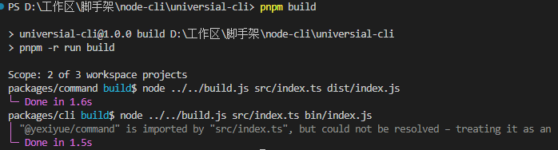

# 脚手架node
前端脚手架是一种用于快速搭建前端项目的工具。它可以帮助开发者快速生成项目的基本结构、配置文件、依赖项等，从而节省开发时间和提高开发效率。前端脚手架通常包括一些常用的功能和库，如自动化构建、代码压缩、代码检查等，可以帮助开发者更好地管理和维护项目。常见的前端脚手架包括Vue-cli、Create React App等。
# 1.cli开发与前端开发的区别
CLI开发和Web前端开发有以下几点区别：
- 目标不同：CLI开发的目标是创建和管理命令行工具，而Web前端开发的目标是创建和维护Web应用程序。
- 技术栈不同：CLI开发通常使用Node.js和一些Node.js模块，如yargs、commander等，而Web前端开发通常使用HTML、CSS、JavaScript等技术。
- 应用场景不同：CLI开发主要应用于命令行工具、脚手架、自动化构建等方面，而Web前端开发主要应用于Web应用程序、网站等方面。
- 需求不同：CLI开发通常需要更多的系统级和命令行工具方面的知识，而Web前端开发需要更多的Web开发技能和UI设计方面的知识。
- 工作方式不同：CLI开发通常是在终端中进行，而Web前端开发通常是在浏览器中进行。

# 2.什么是脚手架
脚手架本质就是一个操作系统的客户端，他通过命令行执行
pnpm create vue
CLI是指命令行界面（Command Line Interface），它是一种通过在命令行中输入命令来与计算机进行交互的方式。与之相对的是图形用户界面（GUI），GUI提供了可视化的操作界面，用户可以通过鼠标和键盘来与计算机进行交互。
CLI通常通过在终端或命令提示符中输入命令来执行特定的操作。它可以用于执行各种任务，如文件操作、系统管理、软件开发等。
CLI具有以下一些特点：
命令行输入：用户通过键盘输入命令和参数来执行操作。命令通常由一个命令名称和一些选项或参数组成。
命令行解析：CLI解析用户输入的命令和参数，并根据其定义的规则执行相应的操作。
脚本化：CLI支持编写脚本，用户可以将一系列命令组合成脚本文件，以便重复执行或自动化操作。
批处理：CLI可以批量处理多个命令，用户可以编写批处理脚本来一次性执行多个命令。
可编程性：CLI通常提供了API或插件机制，允许开发人员编写自定义命令或扩展功能。
CLI在很多情况下比GUI更高效和灵活，特别是在自动化、远程管理和脚本编写方面。它也是开发人员进行软件开发和系统管理的重要工具。
# 3.cli快速开发
# 1.开发流程
脚手架创建
pnpm init
脚手架开发
分包
参数解析
脚手架调试
pnpm link
脚手架发布
pnpm publish
# 2.为什么需要脚手架框架
脚手架框架是一种用于快速构建项目的工具，它提供了一套通用的项目结构、模板代码、工具集等，让开发者可以快速搭建项目的基础框架，从而更快地进行业务开发。 使用脚手架框架的好处有以下几点：
- 提高开发效率：通过脚手架框架提供的模板代码和工具集，可以快速搭建项目的基础框架，省去了从零开始搭建项目的时间和精力。
- 统一项目结构：脚手架框架提供了一套通用的项目结构，可以避免每个开发者都按照自己的习惯来组织项目结构，从而使得项目更加规范和易于维护。
- 降低学习成本：脚手架框架通常提供了一套简单易懂的命令行接口，可以帮助开发者快速上手，降低学习成本。
- 提高项目质量：脚手架框架提供了一些工具集，例如自动化测试、代码检查等，可以帮助开发者提高项目的质量和稳定性。 总之，脚手架框架可以帮助开发者快速搭建项目的基础框架，提高开发效率和项目质量，降低学习成本，是现代软件开发中不可或缺的工具之一。
node中主要的三种框架
- yargs
- command
- oclif
最常用的是command,oclif基于类的方式带来了一种新的思路。
# 3.初始化一个脚手架项目
$ pnpm init
新建文件夹bin在其下面添加index.js
在index.js文件第一行添加如下代码
#!/usr/bin/env node
在package.json下添加
{
"bin": {
"yxy":"bin/index.js"
},
}
然后软链接到全局就能使用命令了
$ pnpm link -g
取消链接的话直接移除全局包就行
$ pnpm remove <包名>
# 4.commander基本使用
#!/usr/bin/env node
import { Command } from "commander";
const program=new Command()
program
.name("yxy")
.description("一个commander使用例子");
program
.option("-d, --debug", "是否启动debug模式")
.option("-n, --name <name>", "名称")
.action((name) => {
console.log(name)
})
program
.command("add <path>")
.description("添加一段路径")
.action((path) => {
console.log(path)
})
program
.command("remove <path>")
.description("移除一段路径")
.option("-f, --force","是否强制移除",false)
.action((path,comObj) => {
console.log(`remove ${path} ,force : ${comObj.force}`)
})
program.parse()
# 5.ora原理
首先引入一些依赖库，包括cliSpinners、cliCursor、BufferListStream和readline。然后定义了一些变量，例如组件库、默认文本、输出流、当前帧数等等。接着创建了一个缓冲区流和一个读取行的接口，并且定义了一个render函数用于渲染动画。然后隐藏了光标，启动了定时器渲染动画，并且定义了一个清除函数和一个停止函数。最后通过setTimeout函数设置了5秒后停止动画。
import cliSpinners from "cli-spinners";
import cliCursor from "cli-cursor"
import {BufferListStream} from "bl";
import readline from "node:readline";
const spinners = cliSpinners.moon //组件库
const text = "loading..." //默认的文本
const stream = process.stderr //输出流
let frameIndex = 0 //当前第几帧
const frames = spinners.frames; //每一帧的内容
const interval = spinners.interval //没一帧的间隔
const mutedStream = new BufferListStream();//创建缓冲区
mutedStream.pipe(process.stdout)
//开启监听
const rl = readline.createInterface({
input: process.stdin,
output: mutedStream
})
function render() {
clear()
const renderTxt = frames[frameIndex] + ' ' + text;
//渲染到终端
stream.write(renderTxt)
frameIndex = ++frameIndex % frames.length;
}
//隐藏光标
cliCursor.hide(stream)
//启动定时器渲染
let i = setInterval(render, interval);
function clear() {
stream.cursorTo(0)
stream.clearLine(1)
}
function stop() {
clearInterval(i)
i = undefined;
clear();
frameIndex = 0
cliCursor.show(stream)
//结束监听
rl.close()
}
setTimeout(() => {
stop()
},5000)
# 6.inquirer使用
import inquirer from 'inquirer'
inquirer.prompt({
type: 'input',
name: 'yourName',
message:"please input you name"
}).then(res => {
console.log(res)
})
# 7.命令行交互原理
function stepRead(callback: (answer: string) => void) {
const input = process.stdin;
const output = process.stdout;
let line = '';
//注册事件
input.on('keypress', onKeypress);
//启动原生模式，逐个读取输入字符
input.setRawMode(true);
input.resume()
//触发keypress事件
emitKeypressEvents(input);
//keypress的回调函数
function onKeypress(s: string) {
output.write(s)
line += s;
switch (s) {
case '\r':
input.pause();
callback(line);
break;
}
}
}
function emitKeypressEvents(stream: NodeJS.ReadStream) {
//使用生成器生成迭代器
const g = emitKeys(stream);
g.next()
//注册data事件，当用户输入数据时会触发onData函数
stream.on('data', onData)
function onData(chunk: Buffer) {
//使用迭代器的next传递参数
g.next(chunk.toString())
}
}
//巧妙使用生成器
function* emitKeys(stream: NodeJS.ReadStream):Generator<any,any,string> {
while (true) {
let ch = yield;
//通过keypress触发回调并传递值
stream.emit('keypress', ch);
}
}
//readline
stepRead((s) => {
console.log('hello '+s)
})
# 8.inquirer核心原理

// 导入 EventEmitter 类，用于处理事件
import EventEmitter from "node:events";
// 导入 MuteStream 类，用于控制输出流的静音
import MuteStream from 'mute-stream'
// 导入 Readline 模块，用于接收用户输入
import Readline from "node:readline";
// 导入 fromEvent 方法，用于处理事件流
import { fromEvent } from 'rxjs'
// 导入 ansi-escapes 模块，用于处理控制台输出
import ansiEscapes from 'ansi-escapes'
// 定义选项对象
const options = {
type: "list",
name: "name",
message: "select your name",
choices: [
{name:"张三",value:"张三"},
{name:"李四",value:"李四"},
{name:"王五",value:"王五"},
]
}
// 定义 Prompt 函数，用于创建并渲染列表
function Prompt(options) {
return new Promise((resolve, reject) => {
try {
const list = new List(options)
list.render()
list.on('exit',resolve)
} catch (error) {
reject(error)
}
})
}
// 定义 List 类，继承自 EventEmitter
class List extends EventEmitter{
constructor(options) {
super()
this.name = options.name;
this.message = options.message;
this.choices = options.choices;
this.input = process.stdin;
const ms = new MuteStream()
ms.pipe(process.stdout)
this.output = ms;
// 创建 Readline 接口
this.rl = Readline.createInterface({
input: this.input,
output: this.output,
})
this.selected = 0;
this.height = 0;
this.keypress=fromEvent(this.input,'keypress').forEach(this.onKeypress)
this.hasSelected = false;
}
// 定义 onKeypress 方法，用于处理按键事件
onKeypress=(keyMap)=> {
const key = keyMap[1].name;
if (key === 'up') {
if (this.selected >0) {
this.selected--;
} else {
this.selected = this.choices.length-1;
}
this.render();
} else if (key === 'down') {
if (this.selected < this.choices.length - 1) {
this.selected++;
} else {
this.selected = 0;
}
this.render();
} else if (key === 'return') {
this.hasSelected = true;
this.render();
this.close();
this.emit('exit', this.choices[this.selected]);
}
}
// 定义 render 方法，用于渲染列表
render() {
this.output.unmute();
this.clean()
this.output.write(this.getContent())
this.output.mute()
}
// 定义 clean 方法，用于清除控制台输出
clean() {
const empty = ansiEscapes.eraseLines(this.height);
this.output.write(empty);
}
// 定义 getContent 方法，用于获取列表内容
getContent=()=> {
if (!this.hasSelected) {
let title =
"\x1B[32m?\x1B[39m \x1B[1m" +
this.message +
"\x1B[22m\x1B[0m\x1B[2m(Use arrow keys)\x1B[22m\n";
this.choices.forEach((value, index) => {
if (index === this.selected) {
//判断是否为最后一个元素
if (index === this.choices.length - 1) {
title +='\x1B[36m> '+ value.name+'\x1B[39m';
} else {
title += "\x1B[36m> " + value.name + "\x1B[39m\n";
}
} else {
//判断是否为最后一个元素
if (index === this.choices.length - 1) {
title += ' '+ value.name;
} else {
title += ' '+value.name + "\n";
}
}
})
this.height = this.choices.length + 1;
return title;
} else {
const name = this.choices[this.selected].name;
let title =
"\x1B[32m?\x1B[39m \x1B[1m" +
this.message +
"\x1B[22m\x1B[0m\x1B[36m " + name + "\x1B[39m\x1B[0m\n";
return title
}
}
// 定义 close 方法，用于关闭 Readline 接口
close() {
this.output.unmute();
this.output.end();
this.rl.pause();
this.rl.close()
}
}
// 调用 Prompt 函数，并处理返回结果
Prompt(options).then((answers) => {
console.log(answers);
});
总结：
主要就是渲染清屏，然后处理键盘事件，最后终端输入。
# 4.通用脚手架框架
# 1.初始化项目
pnpm init
pnpm add @changesets/cli -Dw
可以参考这篇文章
基于 pnpm + changesets 的 monorepo 最佳实践 - 掘金 (juejin.cn) (opens new window)
在根目录添加
pnpm-workspace.yaml文件
packages:
- "packages/*"
初始化ts配置文件
tsc --init
安装依赖
pnpm add typescript tslib rollup -Dw
安装rollup插件
pnpm add @rollup/plugins-typescript -Dw
在packages子包下面
创建tsconfig.json继承根目录下的ts配置文件
{
"extends":["../../tsconfig.json"],
"compilerOptions":{
"declaration": true,
"declarationDir": "types"
}
}
然后用rollup进行打包
build.js
import {rollup} from 'rollup'
import path from 'path';
import commonJs from '@rollup/plugin-commonjs'
import nodeResolve from '@rollup/plugin-node-resolve';
import typescript from '@rollup/plugin-typescript';
async function build() {
//获取入口和输出文件位置
const args = process.argv.slice(2);
const dir = process.cwd();
const bundle = await rollup({
input: path.resolve(dir, args[0]),
plugins: [
typescript(),
/* commonJs({
extensions:[".js",".ts"]
}), */
//nodeResolve(),
],
});
await bundle.write({
format: 'esm',
file: path.relative(dir, args[1]),
banner:"#!/usr/bin/env node"
})
}
build()
修改每个子包下的build命令
{
"scripts": {
"build":"node ../../build.js src/index.ts bin/index.js"
},
}
修改根路径下package.json的build命令
{
"scripts": {
"build": "pnpm -r run build"
},
}
直接在根路径使用pnpm build就会依次构建所有子包

# 2.使用npmlog进行日志打印
import log from "npmlog";
if (process.argv.includes("--debug") || process.argv.includes("-d")) {
log.level = "verbose";
} else {
log.level = "info";
}
log.heading = "yxy";
log.addLevel("success", 2000, {
fg: "green",
bold: true,
});
export { log };
安装semver进行版本比较
cli/src/index.ts
import { program } from "commander"
import pkg from '../package.json'
import { Init } from "@yexiyue/init"
import { log,isDebug } from "@yexiyue/utils"
import semver from 'semver'
import chalk from 'chalk'
const LOWEST_VERSION="19.0.0"
//node 版本检查
function checkNodeVersion() {
log.verbose("node version", process.version)
if (!semver.gte(process.version, LOWEST_VERSION)) {
throw new Error(
chalk.red(`yxy cli 最低需要安装${LOWEST_VERSION}以上版本的node`)
);
}
}
process.on("uncaughtException", (error) => {
if (isDebug()) {
console.error(error)
} else {
log.error("error", error.message);
}
})
//启动逻辑
function preAction() {
checkNodeVersion()
}
export default function entry(argv: string[]) {
program
.name(Object.keys(pkg.bin)[0])
.usage('<command> [options]')
.version(pkg.version)
.option('-d, --debug', "是否开启调试模式", false)
.hook("preAction",preAction)
Init(program)
program.parse(argv)
}
# 3.解决esm无法使用dirname,filename的问题
import path from "path";
import { fileURLToPath } from "url";
export function getDirnameAndFilename(str:string) {
const filename=fileURLToPath(import.meta.url);
return {
filename,
dirname:path.dirname(filename)
}
}
# 4.对异常进行监听
import { isDebug, log } from "@yexiyue/utils";
export function exception() {
function printError(error: any,type:string) {
if (isDebug()) {
log.error(type,error);
} else {
log.error(type, error.message);
}
}
//捕捉常见错误
process.on("uncaughtException", (e)=>printError(e,'error'));
//捕捉promise异常
process.on("unhandledRejection", (e)=>printError(e,'promise'));
}
# 5.监听属性和命令
//监听debug属性
program.on('option:debug', () => {
if (program.opts().debug) {
log.verbose('debug','debug模式启动')
}
})
//监听未注册的命令
program.on("command:*", (ojb)=>{
log.error("未知的命令：",ojb[0])
})
# 6.集成vitest
pnpm add vitest -Dw
然后直接在cli/__test__/cli.test.ts文件编写测试
import { expect, test } from 'vitest'
test("run error command", () => {
expect(1+1).toBe(2)
})
最后在根package.json中添加test命令
{
"test":"vitest"
}
vitest能自动支持monorepo，ts，esm
# 7.使用execa执行命令
pnpm add execa
结合vitest编写测试用例
import { expect, test,assert } from 'vitest'
import {execa} from 'execa'
import path from 'path'
import {version} from '../package.json'
const CLI = path.join(__dirname, '../bin/index.js');
const bin = () => (...args:any[]) => execa(CLI,args);
test("run error command", async () => {
const {stderr} =await bin()('iii')
expect(stderr).toContain("未知的命令： iii");
})
test("should not throw error when use --help", async() => {
let error = null;
try {
await bin()('--help')
} catch (err) {
error=err
}
expect(error).toBe(null);
})
test("show correct version", async () => {
const { stdout } = await bin()("-V")
expect(stdout).toContain(version)
})
test("open debug mode", async () => {
let e = null;
try {
await bin()("-d");
} catch (error:any) {
e=error
}
expect(e.message).toContain("debug模式启动");
})

# 5.初始化cli
# 1.创建项目模板

首先先在npm上新建一个Organization

然后在模板项目下新建package.json文件
{
"name": "@yexiyue.com/template-vue",
"version": "1.0.2",
"description": "a template for vue3",
"keywords": [
"vue3",
"template",
"typescript",
"cli"
],
"author": "yexiyue",
"license": "ISC",
"publishConfig": {
"access": "public"
}
}
然后npm publish发布到npm
这样一个模板就创建成功
可以使用git对所有项目模板进行管理